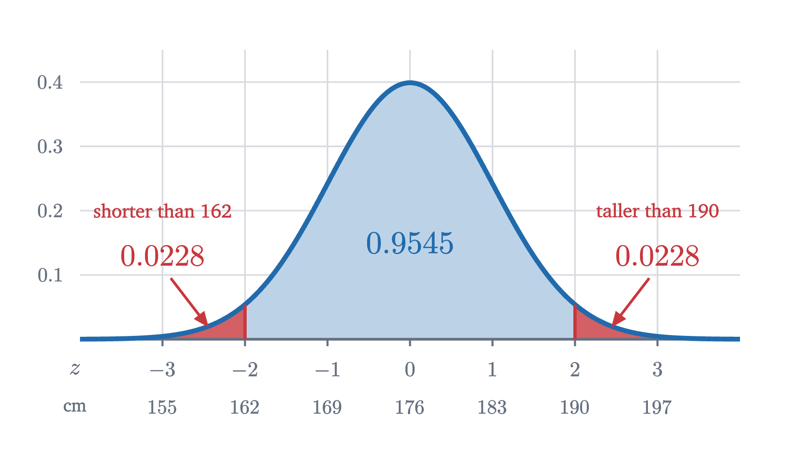
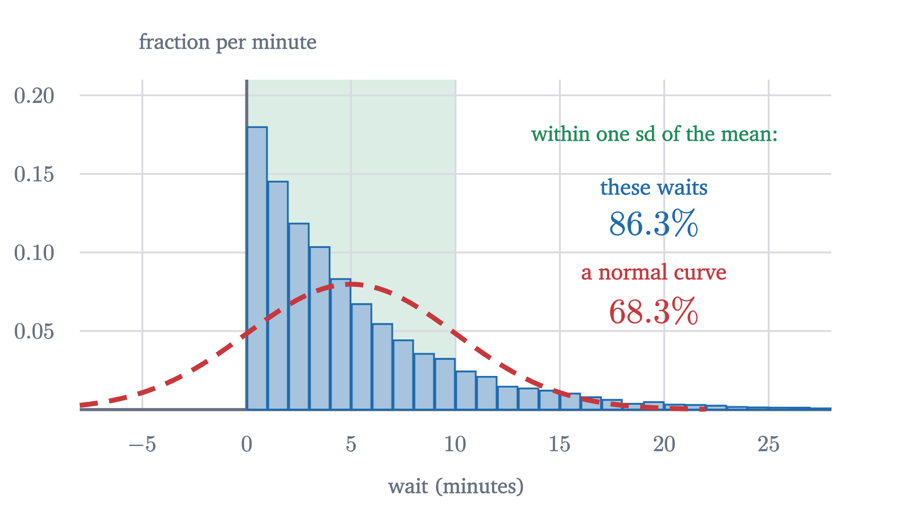

The normal distribution and the 68-95-99.7 rule
A histogram with ever narrower bins settles onto a curve whose areas are probabilities. For the bell curve, those areas give the 68-95-99.7 rule and z-scores.
AssumesMean, median and standard deviation: what each one saysWhat is an integral? Adding up to get area
What fraction of men are exactly 180 centimeters tall? Not 180 to the nearest centimeter, but 180.000... with zeros forever. Hardly any, and with enough decimal places demanded, none at all. The same goes for 176, for 190, and for every other height. So each exact height has probability zero, and yet every man has one, and heights near 180 are plainly more common than heights near 200.
The earlier probability lessons had no such trouble. A die has six outcomes and each gets a positive probability. Height is a measurement on a continuous scale, and on a continuous scale the question “how likely is this exact value?” has the same useless answer everywhere. We need a different way to say where the values tend to fall. This lesson builds it, and then studies the most important example, the bell curve, far enough to see where the numbers 68, 95 and 99.7 come from.
From a histogram to a curve
Our data are simulated: 40,000 heights of men, generated so that their mean is 176 cm and their standard deviation is 7 cm, which is roughly right for adult men in many countries. Recall from the first lesson that the mean is the balance point of the data and the standard deviation is the root of the mean squared deviation, a typical distance from the mean.
The standard picture of such data is a histogram. Cut the height axis into bins, and over each bin draw a bar whose height is the fraction of the data that falls in it. With bins 8 cm wide, the tallest bar covers 172 to 180 cm and holds about 43% of the men.
We would like the picture to be as detailed as possible, so we should narrow the bins.
Pause and try
The bin from 176 to 184 cm holds 37.1% of the men. Split it into two bins 4 cm wide, then split again. Roughly what fraction does a bin 1 cm wide hold? What happens to every bar’s height if we keep narrowing?
Show answerHide answer
Halving a bin’s width roughly halves its contents, a little more or less depending on which side of the peak it is on. The bin from 176 to 180 holds 21.5%, from 176 to 178 it is 11.2%, and from 176 to 177 it is 5.6%. Each halving of the width roughly halves every bar, so the whole histogram sinks toward the axis. In the limit every bar has height zero, which is the opening puzzle again.
The collapse has a simple cause, and the cause suggests the repair. A bar shrinks because its bin shrinks. The fraction in a narrow bin is roughly proportional to the bin’s width, so the quantity that stays put is the fraction divided by the width: the fraction of men per centimeter of height. For the bins starting at 176 that ratio is $0.371/8 \approx 0.046$, then $0.215/4 \approx 0.054$, then $0.112/2 = 0.056$, then $0.056/1 = 0.056$ per centimeter. It is settling down.
So redraw the histogram with bar height equal to fraction divided by bin width. That is the figure at the top of the page. Now narrowing the bins sharpens the picture without flattening it, and the tops of the bars close in on a curve. With this scaling a bar’s area has a meaning: height times width is (fraction per cm) times (cm), which is the fraction of men in the bin. The heights of the bars are no longer probabilities, but their areas are.
Area is probability
This resolves the opening puzzle. The probability of a range of heights is an area, and a single exact height is a range of width zero, so its area is zero however tall the curve is there. The height of the curve at 180 is a rate, probability per centimeter, and it becomes a probability only when multiplied by a width.
To state this exactly we need the area under a curve, which is what an integral is. Recall from the lesson on integrals that $\int_a^b f(x)\,dx$ is the area between the graph of $f$ and the axis from $x = a$ to $x = b$, defined as the limit of the total area of thin rectangles of height $f(x)$ as their widths shrink to zero. A histogram with narrow bins is such a collection of rectangles.
The two conditions are the two rules of probability in new clothes: probabilities are never negative, and the probability that $X$ lands somewhere is 1. The integral over the whole line means the limit of $\int_{-R}^{R} f$ as $R$ grows. And since single points have area zero, $P(a \le X \le b)$ and $P(a < X < b)$ are equal, so for densities we can stop worrying about whether endpoints are included.
Pause and try
A density has the value 3 at some point. Does that contradict the rule that probabilities are at most 1? To decide, consider the density that equals 3 on the interval from 0 to $\frac13$ and equals 0 everywhere else.
Show answerHide answer
There is no contradiction. That function is never negative, and its total area is $3 \times \frac13 = 1$, so it is a density. The probability of landing between 0 and 0.1 is the area $3 \times 0.1 = 0.3$. A density can be as tall as you like on a narrow enough range, because only areas are probabilities.
The mean and standard deviation carry over from data to densities with sums replaced by integrals. The mean is $\mu = \int x f(x)\,dx$, the balance point of the region under the curve, and the variance is $\sigma^2 = \int (x - \mu)^2 f(x)\,dx$, both taken over the whole line. (For some densities these integrals do not settle on a finite value, and then the mean or the variance does not exist; the next lesson meets one. Every density used below has both.)
The formula for the bell curve
The curve that the height histogram settled onto has a formula. It is built from the function $e^{-z^2/2}$, where $e \approx 2.718$ is the base of natural logarithms, and each of the remaining pieces is there for a reason that we can now state.
The exponent $-z^2/2$ is what makes the bell. Squaring makes the curve symmetric about zero, and the minus sign makes it fall as $|z|$ grows. It falls extremely fast: $e^{-z^2/2}$ is 0.61 at $z = 1$ but about $3.7 \times 10^{-6}$ at $z = 5$. That speed is the feature of the normal distribution that matters most in practice, and it is why values many standard deviations from the mean essentially never happen.
The constant in front only fixes the area. The area under $e^{-z^2/2}$ is exactly $\sqrt{2\pi} \approx 2.5066$. That is a theorem (the Gaussian integral) whose usual proof needs integrals in two variables and is beyond this lesson; the figure checks it numerically. Dividing by $\sqrt{2\pi}$ gives the standard normal density
It has mean 0, by symmetry, and standard deviation 1. The second fact also needs a computation that I am leaving out, an integration by parts showing $\int z^2\varphi(z)\,dz = 1$; a numerical integration agrees to four decimal places.
A bell for heights must be centered at 176 and be 7 times as wide. Moving the center is a shift: replace $z$ by $x - \mu$. Widening by a factor $\sigma$ means replacing $z$ by $(x - \mu)/\sigma$, so that $x$ has to travel $\sigma$ units to do what $z$ did in one. But stretching a region sideways by a factor $\sigma$ multiplies its area by $\sigma$, and the area must stay 1, so every height is divided by $\sigma$ to compensate. Shifting and stretching act on the mean and standard deviation as they did for data in the first lesson: if $Z$ has mean 0 and standard deviation 1, then $\sigma Z + \mu$ has mean $\mu$ and standard deviation $\sigma$, which is why the two parameters in the definition below carry those names.
For the heights, the peak is $\frac{1}{7\sqrt{2\pi}} \approx 0.057$ per cm, which matches the top of the histogram. Halve $\sigma$ and the peak doubles.
Measuring in standard deviations
Every normal density is the standard one, shifted and stretched. That suggests measuring every normal quantity on a common scale.
The z-score says how many standard deviations $x$ lies above the mean, with negative values below. A height of 190 cm has $z = \frac{190 - 176}{7} = 2$, and a height of 169 cm has $z = -1$. The point of the definition is the following theorem, which says that for a normal quantity, probabilities depend on z-scores and on nothing else.
Each rectangle became $\sigma$ times narrower and $\sigma$ times taller, which is the stretching argument made exact. The theorem reduces every question about every normal distribution to areas under one curve.
Where 68, 95 and 99.7 come from
So we need areas under $\varphi$. Here there is an obstacle of a kind you may not have met before: the function $e^{-z^2/2}$ has no antiderivative that can be written with the usual functions (powers, exponentials, logarithms, trigonometric functions). This is a theorem of Liouville from the 1830s. Nobody is missing a trick. The areas are perfectly definite numbers, but they have to be computed numerically, by adding up thin slices, and that is what the next figure does.
Pause and try
Before looking: the area under $\varphi$ between $-1$ and $1$ is the probability that a normal quantity lands within one standard deviation of its mean. Use the peak height $\varphi(0) \approx 0.40$ and the height $\varphi(1) \approx 0.24$ to decide whether that probability is nearer 0.5, 0.65 or 0.8.
Show answerHide answer
The region is 2 wide. Its height falls from 0.40 in the middle to 0.24 at each end, so its area is between $2 \times 0.24 = 0.48$ and $2 \times 0.40 = 0.80$. The curve is rounded outward over that range, so it stays closer to 0.40 than a straight line would, and the area should be above the midpoint 0.64 of those bounds. Nearer 0.65 is the right choice; the computed value is 0.6827.
The simulated sample agrees: of the 40,000 heights, 68.05% fell within 7 cm of 176, 95.49% within 14 cm and 99.74% within 21 cm.
Compare this with the only promise that holds for every shape, which was a problem in the first lesson (Chebyshev’s inequality). For any data set whatever, at most $\frac14$ of the values lie two or more standard deviations from the mean. For normal data the true share is under 5%. The general bound has to allow for every possible shape, and the normal shape is far more concentrated than the worst case.
Worked examples

When the rule does not apply
The 68-95-99.7 rule is a property of one particular shape. It is tempting to apply it to any data with a mean and a standard deviation, and it can fail badly.
Take the waiting time for a bus that arrives at random moments, five minutes apart on average. The standard model for such waits, the exponential distribution, is very different from a bell: short waits are the most common, and long ones trail off to the right. Its mean and its standard deviation are both 5 minutes.

The normal model is wrong here in a way that needs no calculation: it assigns probability 0.16 to waits shorter than zero. Incomes, city sizes and anything else with a long tail on one side fail in the same way. Even symmetric data can fail, if extreme values are more common than the fast-falling bell allows; daily changes in stock prices are a well-known case, with far too many “five standard deviation” days.
Heights of adults of one sex, measurement errors, and averages of many small independent effects are well described by a normal distribution. Why that last category is so large is the subject of the next lesson. In every case the normal curve is a model, to be checked against a histogram before its percentages are trusted.
Stepping back
The hard step was the first one: giving up on the probability of a single value and assigning probability to ranges instead, as area under a density. After that, the normal distribution is one function, $\varphi$, together with two operations, shift by $\mu$ and stretch by $\sigma$. The z-score undoes those operations, and that is why a single short list of areas, 68, 95 and 99.7, serves for heights, exam scores and anything else that is normal. The same reduction will be used constantly from here on: convert to z-scores, then look up an area.
Check yourself
Bottles are filled with a mean of 500 ml and a standard deviation of 4 ml, and the amounts are normally distributed. About what fraction of bottles contain less than 492 ml?
Problems
The first three use the rule directly. The next three ask you to reason about densities. The last two go further.
Problem 1
Scores on a test are normal with mean 100 and standard deviation 15. Using the 68-95-99.7 rule, find the approximate fraction of scores (a) between 85 and 115, (b) above 130, (c) below 55.
Show solutionHide solution
(a) These are $z = -1$ and $z = 1$: about 68%. (b) $z = 2$. About 95% of scores are within two standard deviations, so about 5% are outside, half of them above: about 2.5% (more exactly, $0.0455/2 = 2.3\%$). (c) $z = -3$. About 0.27% are outside three standard deviations, half of them below: about 0.135%, or 1 in 740.
Problem 2
A machine fills bags with a mean of 1000 g and a standard deviation of 5 g, normally distributed. (a) What range contains the middle 95% of bags? (b) In a shipment of 2000 bags, about how many weigh more than 1015 g?
Show solutionHide solution
(a) Two standard deviations either side of the mean: 990 g to 1010 g. (b) 1015 g is $z = 3$. The fraction above is half of $1 - 0.9973 = 0.0027$, that is, 0.00135. Out of 2000 bags that is $2000 \times 0.00135 = 2.7$, so about 3 bags.
Problem 3
Compute the standard normal density $\varphi(z) = \frac{1}{\sqrt{2\pi}}e^{-z^2/2}$ at $z = 0$, $1$ and $2$, using $\sqrt{2\pi} \approx 2.5066$, $e^{-1/2} \approx 0.6065$ and $e^{-2} \approx 0.1353$. Then find the peak height of the normal density with $\sigma = 0.1$. Is anything wrong with a height above 1?
Show solutionHide solution
$\varphi(0) = 1/2.5066 \approx 0.3989$, $\varphi(1) = 0.6065/2.5066 \approx 0.2420$ and $\varphi(2) = 0.1353/2.5066 \approx 0.0540$. The peak of a normal density is $\frac{1}{\sigma}\varphi(0)$, which for $\sigma = 0.1$ is about 3.99. Nothing is wrong: the density is a rate. Almost all of the area sits within $3\sigma = 0.3$ of the mean, and a region 0.6 wide can have area 1 only if it is tall.
Problem 4
Let $f(x) = \frac{1}{10}$ for $0 \le x \le 10$ and $f(x) = 0$ otherwise. (a) Check that $f$ is a density. (b) Find $P(2 \le X \le 5)$ and $P(X = 3)$. (c) What fraction of the probability lies within one standard deviation of the mean, given that the standard deviation is $10/\sqrt{12} \approx 2.89$? Compare with 68%.
Show solutionHide solution
(a) $f \ge 0$ everywhere, and the region under it is a rectangle 10 wide and $\frac{1}{10}$ tall, with area 1. (b) The area over $[2, 5]$ is $3 \times \frac{1}{10} = 0.3$. A single point has width zero, so $P(X = 3) = 0$. (c) The mean is 5 by symmetry. The range $5 \pm 2.89$ has width 5.77 and lies inside $[0, 10]$, so its probability is $5.77 \times \frac{1}{10} \approx 0.58$. That is noticeably less than 68%: the flat density is not normal, and the rule does not apply to it.
Problem 5
The heights of men are normal with mean 176 and standard deviation 7. Without computing any new areas, find the height that is exceeded by about 16% of men, and the height below which about 0.135% of men fall.
Show solutionHide solution
The area within one standard deviation is 0.6827, so the two tails beyond hold 0.3173 together and 0.1587 each. About 16% of men are therefore above $z = 1$, which is $176 + 7 = 183$ cm. Similarly the tails beyond three standard deviations hold $0.0027/2 = 0.00135$ each, so 0.135% of men are below $z = -3$, which is $176 - 21 = 155$ cm.
Problem 6
Suppose the standard deviation of the heights were 3.5 cm, half its real value, with the mean still 176. (a) What happens to the peak height of the density? (b) What fraction of men would then be between 169 and 183 cm? (c) Explain why the answer to (b) had to go up.
Show solutionHide solution
(a) The peak is $\frac{1}{\sigma\sqrt{2\pi}}$, so halving $\sigma$ doubles it, from about 0.057 to about 0.114 per cm. (b) Now 169 and 183 are $z = \pm 2$, so the fraction is about 95.45%. (c) The total area is fixed at 1. A narrower bell piles more of that area near the mean, so any fixed range around the mean captures more of it. The same 14 cm range that was two standard deviations wide is now four.
Problem 7
Estimate the area under $\varphi$ from $z = 0$ to $z = 1$ by hand, using two trapezoids of width $\frac12$ and the values $\varphi(0) = 0.3989$, $\varphi(0.5) = 0.3521$, $\varphi(1) = 0.2420$. Double your answer and compare with 0.6827. Is your estimate too high or too low, and why?
Show solutionHide solution
A trapezoid of width $w$ with parallel sides $p$ and $q$ has area $w(p + q)/2$. The two trapezoids have areas $\frac12 \cdot \frac{0.3989 + 0.3521}{2} = 0.18775$ and $\frac12 \cdot \frac{0.3521 + 0.2420}{2} = 0.14853$, totalling $0.3363$. Doubling gives 0.6726, about 1.5% below 0.6827. The estimate is too low because between $z = -1$ and $z = 1$ the curve bulges above each chord joining two of its points, so every trapezoid lies under the curve. (The next problem shows that this bulging stops exactly at $z = \pm 1$.) More and thinner trapezoids close the gap, and that is how the areas above were computed.
Problem 8
(Requires derivatives.) Show that $\varphi'(z) = -z\,\varphi(z)$ and $\varphi''(z) = (z^2 - 1)\,\varphi(z)$. Conclude that the bell curve changes from bending downward to bending upward exactly at $z = \pm 1$, so that for a general normal density the standard deviation is the distance from the mean to the points where the bending changes.
Show solutionHide solution
By the chain rule, the derivative of $e^{-z^2/2}$ is $e^{-z^2/2}$ times the derivative of $-z^2/2$, which is $-z$. The constant $\frac{1}{\sqrt{2\pi}}$ carries through, so $\varphi'(z) = -z\varphi(z)$. Differentiating again with the product rule, $\varphi''(z) = -\varphi(z) - z\varphi'(z) = -\varphi(z) + z^2\varphi(z) = (z^2 - 1)\varphi(z)$. Since $\varphi(z) > 0$ always, the sign of $\varphi''$ is the sign of $z^2 - 1$: negative for $|z| < 1$, where the curve bends downward, and positive for $|z| > 1$, where it bends upward. The change happens at $z = \pm 1$, which for a normal density with parameters $\mu$ and $\sigma$ are the points $x = \mu \pm \sigma$. So $\sigma$ can be read off a drawing of the bell: it is the horizontal distance from the center to the point where the curve is steepest.